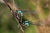

mating

Definition: In biology, mating is the pairing of either opposite-sex or hermaphroditic organisms for the purposes of sexual reproduction. Fertilization is the fusion of two gametes.Copulation is the union of the sex organs of two sexually reproducing animals for insemination and subsequent internal fertilization. Mating may also lead to external fertilization, as seen in amphibians, fishes and plants. For most species, mating is between two individuals of opposite sexes. However, for some hermaphroditic species, copulation is not required because the parent organism is capable of self-fertilization (autogamy); for example, banana slugs.
Source: Wikipedia
Wikipedia Page (Something wrong with this association? Let us know.)
Wikidata Page (Something wrong with this association? Let us know.)